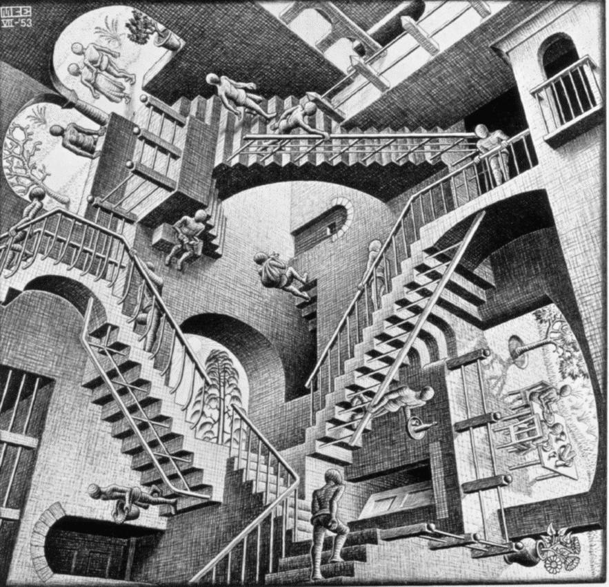

Maurits Cornelis Escher (Leeuwarden, Países Bajos, 15 de junio de 1898 - Hilvanarse, Países Bajos, 27 de marzo de 1972), más conocido como M. C. Escorche fue un artista holandés conocido por sus grabados en madera, xilografías y litografías que tratan sobre figuras imposibles, teselados y mundos imaginarios. Su obra experimenta con diversos métodos de representar (en dibujos de 2 o 3 dimensiones) espacios paradójicos que desafían a los modos habituales de representación.